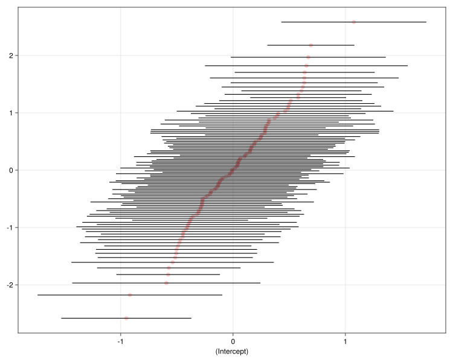

┌ Warning: SIMD capacity not detected by ScanByte, using scalar fallback
└ @ ScanByte /Users/reinholdkliegl/.julia/packages/ScanByte/cr4PT/src/ScanByte.jl:11
In this chapter we consider mixed-effects models for data sets in which the response is binary, representing yes/no or true/false or correct/incorrect responses.
Because the response must be one of only two possible values we adapt our models to predict the probability of the positive response. As for linear models and linear mixed-effects models, the mean response, \(\bbmu\), is determined by a linear predictor, \[
\bbeta=\bbX\bbbeta+\bbZ\bbb
\qquad(5.1)\] depending on the fixed-effects parameters, \(\bbbeta\), the random effects, \(\bbb\), and the model matrices, \(\bbX\) and \(\bbZ\). For a linear model the mean response, \(\bbmu\), is the linear predictor, \(\bbeta\). But for a generalized linear model \(\bbeta\) determines \(\bbmu\) according to a link function, \(g\). For historical reasons it is the function taking an element of \(\bbmu\) to the corresponding element of \(\bbeta\) that is called the link. The transformation in the opposite direction, from \(\bbeta\) to \(\bbmu\), is called the inverse link.
As in previous chapters, we will begin with an example to help illustrate these ideas.
5.1 Artificial contraception use in regions of Bangladesh
One of the test data sets from the Center for Multilevel Modelling, University of Bristol is derived from the 1989 Bangladesh Fertility Survey, (Huq & Cleland, 1990). The data are a subsample of 1934 women selected from 60 of the 64 political districts or zila, available as the contra data set in the MixedModels package.
contra =@chain:contra begin MixedModels.dataset@asideprintln(_) DataFrameend;describe(contra, :mean, :min, :median, :max)
Arrow.Table with 1934 rows, 5 columns, and schema:
The response of interest is use — whether the woman chooses to use artificial contraception. The covariates include the district in which the woman resides, the number of live children she currently has, her age and whether she is in a rural or an urban setting.
Note that the age variable is centered about a particular age so some values are negative. Regretably, the information on what the centering age was does not seem to be available.
5.1.1 Plotting the binary response
Producing informative graphical displays of a binary response as it relates to covariates is somewhat more challenging that the corresponding plots for responses on a continuous scale. If we were to plot the 1934 responses as 0/1 values versus, for example, the woman’s centered age, we would end up with a rather uninformative plot because all the points would fall on one of two horizontal lines.
One approach to illustrating the structure of the data more effectively is to add scatterplot smoother lines as in Figure 5.1
Figure 5.1: Smoothed relative frequency of contraception use versus centered age for women in the 1989 Bangladesh Fertility Survey
to show the trend in the response with respect to the covariate. Once we have the smoother lines in such a plot we can omit the data points themselves, as we did here, because they add very little information.
The first thing to notice about the plot is that the proportion of women using contraception is not linear in age, which, on reflection, makes sense. A woman in the middle of this age range (probably corresponding to an age around 25) is more likely to use artificial contraception than is a girl in her early teens or a woman in her forties. We also see that women in an urban setting are more likely to use contraception than those in a rural setting and that women with no live children are less likely than women who have live children. There do not seem to be strong differences between women who have 1, 2 or 3 or more children compared to the differences between women with children and those without children.
Interestingly, the quadratic pattern with respect to age does not seem to have been noticed. Comparisons of model fits through different software systems, as provided by the Center for Multilevel Modelling, incorporate only a linear term in age, even though the pattern is clearly nonlinear. The lesson here is similar to what we have seen in other examples; careful plotting of the data should, whenever possible, precede attempts to fit models to the data.
5.1.2 Initial GLMM fit to the contraception data
As for a linear mixed-model, the first three arguments in a call to fit a generalized linear mixed models are MixedModel, the model formula, and the name of the data frame. The fourth argument describes the type of conditional distribution of the response given the random effects.
Generalized Linear Mixed Model fit by maximum likelihood (nAGQ = 1)
use ~ 1 + livch + age + :(age ^ 2) + urban + age & urban + :(age ^ 2) & urban + (1 | dist)
Distribution:
Variance components:
Column Variance Std.Dev.
dist (Intercept) 0.226039 0.475436
Number of obs: 1934; levels of grouping factors: 60
Fixed-effects parameters:
──────────────────────────────────────────────────────────────
Coef. Std. Error z Pr(>|z|)
──────────────────────────────────────────────────────────────
(Intercept) -0.0115288 0.105467 -0.11 0.9130
livch: 1 0.153578 0.0981766 1.56 0.1177
livch: 2 0.256163 0.104455 2.45 0.0142
livch: 3+ 0.258254 0.102217 2.53 0.0115
age 0.000663058 0.00954016 0.07 0.9446
age ^ 2 -0.00474472 0.000774522 -6.13 <1e-09
urban: Y 0.376827 0.0803239 4.69 <1e-05
age & urban: Y -0.00678813 0.00685774 -0.99 0.3222
age ^ 2 & urban: Y -0.000368095 0.000731401 -0.50 0.6148
──────────────────────────────────────────────────────────────
The Bernoulli distribution is used for binary responses. Occasionally responses taken at the same covariate values are grouped together and modeled with a Binomial distribution, but that is the exception, not the rule.
A fifth unnamed argument can be included to specify the link function but for most cases a canonical link function is defined and used. As we see in the output above, the canonical link for the Bernoulli distribution (and the Binomial distribution) is the logit link.
The interpretation of the coefficients in this model is somewhat different from the linear mixed models coefficients that we examined previously but many of the model-building steps are similar. A rough assessment of the utility of a particular term in the fixed-effects part of the model can be obtained from examining the estimates of the coefficients associated with it and their standard errors. To test whether a particular term is useful we omit it from the model, refit and compare the reduced model fit to the original according to the change in deviance.
We will examine the terms in the model first and discuss the interpretation of the coefficients in .
Recall from ?sec-covariates that the default set of contrasts for a factor such as livch is offsets relative to the reference level, in this case women who do not have any live children. Although the coefficients labeled livch: 1, livch: 2, and livch: 3+ are all large relative to their standard errors, they are reasonably close to each other. This confirms our earlier impression that the main distinction is between women with children and those without and, for those who do have children, the number of children is not an important distinction.
After incorporating a new variable ch — an indicator of whether the woman has any children — in the data
Figure 5.2: Smoothed relative frequency of contraception use versus centered age for women in the 1989 Bangladesh Fertility Survey. The livch factor has been collapsed to children/nochildren.
indicates that all four groups have a quadratic trend with respect to age but the location of the peak proportion is shifted for those without children relative to those with children. Incorporating an interaction of age and ch allows for such a shift.
Continuing with the model-building we turn our attention to the random effects specification to see whether urban/rural differences vary significantly between districts and whether the distinction between childless women and women with children varies between districts.
com04 =let form =@formula(use ~1+ urban + ch * age + age^2+ (1| dist))fit(MixedModel, form, contra, Bernoulli(); contrasts)end
Est.
SE
z
p
σ_dist
(Intercept)
-0.9663
0.2078
-4.65
<1e-05
0.4723
urban: Y
0.3570
0.0601
5.94
<1e-08
ch
1.2108
0.2070
5.85
<1e-08
age
-0.0473
0.0218
-2.17
0.0303
age ^ 2
-0.0058
0.0008
-6.89
<1e-11
ch & age
0.0684
0.0254
2.69
0.0072
We fit a succession of models, described in the exercises for this chapter, before settling on model com05,
com05 =let form =@formula( use ~1+ urban + ch * age + age^2+ (1| dist & urban) )fit(MixedModel, form, contra, Bernoulli(); contrasts)end
Est.
SE
z
p
σ_dist & urban
(Intercept)
-0.9474
0.2088
-4.54
<1e-05
0.5683
urban: Y
0.3934
0.0853
4.61
<1e-05
ch
1.2129
0.2090
5.80
<1e-08
age
-0.0462
0.0220
-2.10
0.0361
age ^ 2
-0.0056
0.0008
-6.67
<1e-10
ch & age
0.0665
0.0256
2.59
0.0095
Notice that although there are 60 distinct districts there are only 102 distinct combinations of represented in the data. In 15 of the 60 districts there are no rural women in the sample and in 3 districts there are no urban women in the sample, as shown in
5.2 Link functions and interpreting coefficients
To this point the only difference we have encountered between and as model-fitting functions is the need to specify the distribution family in a call to fit. The formula specification is identical and the assessment of the significance of terms using likelihood ratio tests is similar. This is intentional. We have emphasized the use of likelihood ratio tests on terms, whether fixed-effects or random-effects terms, exactly so the approach will be general.
However, the interpretation of the coefficient estimates in the different types of models is different. In a linear mixed model the linear predictor is the conditional mean (or “expected value”) of the response given the random effects. That is, if we assume that we know the values of the fixed-effects parameters and the random effects, then the expected response for a particular combination of covariate values is the linear predictor. Individual coefficients can be interpreted as slopes of the fitted response with respect to a numeric covariate or as shifts between levels of a categorical covariate.
To interpret the estimates of coefficients in a GLMM we must define and examine the link function that we mentioned earlier.
5.2.1 The logit link function for binary responses
The probability model for a binary response is the Bernoulli distribution, which is about the simplest probability distribution we can concoct. There are only two possible values: 0 and 1. If the probability of the response 1 is \(p\) then the probability of 0 must be \(1-p\). It is easy to establish that the expected value is also \(p\). For consistency across distribution families we write this expected response as \(\mu\) instead of \(p\). We should, however, keep in mind that, for this distribution, \(\mu\) corresponds to a probability and hence must satisfy \(0\le\mu\le 1\).
In general we don’t want to have restrictions on the values of the linear predictor so we equate the linear predictor to a function of \(\mu\) that has an unrestricted range. In the case of the Bernoulli distribution with the canonical link function we equate the linear predictor to the log odds or logit of the positive response. That is \[
\eta = \log\left(\frac{\mu}{1-\mu}\right) .
\qquad(5.2)\]
To understand why this is called the “log odds” recall that \(\mu\) corresponds to a probability in \([0,1]\). The corresponding odds ratio, \(\frac{\mu}{1-\mu}\), is in \([0,\infty)\) and the logarithm of the odds ratio, \(\mathrm{logit}(\mu)\), is in \((-\infty, \infty)\).
The inverse of the logit link function, \[
\mu = \frac{1}{1+\exp(-\eta)} ,
\qquad(5.3)\] is called the logistic function and is shown in Figure 5.3.
Figure 5.3: The logistic function, which is the inverse to the logit link function.
The inverse link takes a value on the unrestricted range, \((-\infty,\infty)\), and maps it to the probability range, \([0,1]\). It happens this function is also the cumulative distribution function for the standard logistic distribution, available in Distributions.jl as cdf(Logistic(), η). In some presentations the relationship between the logit link and the logistic distribution is emphasized but that often leads to questions of why we should focus on the logistic distribution. Also, it is not clear how this approach would generalize to other distributions such as the Poisson or the Gamma distributions.
5.2.2 Canonical link functions
A way of deriving the logit link that does generalize to a class of common distributions in what is called the exponential family is to consider the logarithm of the probability function (for discrete distributions) or the probability density function (for continuous distributions). The probability function for the Bernoulli distribution is \(\mu\) for \(y=1\) and \(1-\mu\) for \(y=0\). If we write this in a somewhat peculiar way as \(\mu^y+(1-\mu)^{1-y}\) for \(y\in\{0,1\}\) then the logarithm of the probability function becomes \[
\log\left(\mu^y+(1-\mu)^{1-y}\right) = \log(1-\mu) +
y\,\log\left(\frac{\mu}{1-\mu}\right) .
\qquad(5.4)\] Notice that the logit link function is the multiple of \(y\) in the last term.
For members of the exponential family the logarithm of the probability or probability density function can be expressed as a sum of up to three terms: one that involves \(y\) only, one that involves the parameters only and the product of \(y\) and a function of the parameters. This function is the canonical link.
In the case of the Poisson distribution the probability function is \(\frac{e^{-\mu}\mu^y}{y!}\) for \(y\in\{0,1,2,\dots\}\) so the log probability function is \[
-\log(y!)-\mu+y\log(\mu) .
\qquad(5.5)\] and the canonical link function is \(\log(\mu)\).
5.2.3 Interpreting coefficient estimates
Returning to the interpretation of the estimated coefficients in model we apply exactly the same interpretation as for a linear mixed model but taking into account that slopes or differences in levels are with respect to the logit or log-odds function. If we wish to express results in the probability scale then we should apply the function to whatever combination of coefficients is of interest to us.
For example, we see from Figure 5.2 that the observed proportion of childless women with a centered age of 0 living in a rural setting who use artificial contraception is about 20%. The fitted value of the log-odds for a typical district (i.e. with a random effect of zero) is corresponding to a fitted probability of
or %.
Similarly the predicted log-odds of a childless woman with a centered age of 0 in an urban setting of a typical district using artificial contraception is
corresponding to a probability of
The predicted log-odds and predicted probability for a woman with children and at the same age and location are
We should also be aware that the random effects are defined on the linear predictor scale and not on the probability scale. A normal probability plot of the conditional modes of the random effects for model
shows that the smallest random effects are approximately -1 and the largest are approximately 1. The numerical values and the identifier of the combination of and for these extreme values can be obtained as
and
The exponential of the random effect is the relative odds of a woman in a particular urban/district combination using artificial birth control compared to her counterpart (same age, same with/without children status, same urban/rural status) in a typical district. The odds of a rural woman in district 1 (i.e. the value of the interaction) using artifical contraception is
or about 40% of that of her urban counterpart in a typical district.
Notice that there is considerable variability in the lengths of the prediction intervals in
Code
qqcaterpillar(com05)

Figure 5.4: Caterpillar plot of the conditional modes of the random-effects for model com05
This is to be expected with data from a highly unbalanced observational study.
Consider the cross-tabulation of counts of interviewees by district and urban/rural status presented at the end of . The data contains responses from 54 rural women in district 1 but only 21 rural women from district 11. Thus the bottom line in Figure 5.4, from the level of the interaction, and based on 54 responses, is shorter than the line second from the bottom, for and based on 21 women only.
Huq, N. M., & Cleland, J. (1990). Bangladesh fertility survey 1989 (main report). National Institute of Population Research; Training.